Bumpers · 48-03-09
Front Bumper — Ford
Removal
- Disconnect the parking light wires at the multiple connectors.
- Remove the screws attaching the bumper to the reinforcement (Fig. 1) at the license plate opening.
- Remove the bumper attaching bolts and remove the bumper from the bumper arms (Fig. 1).
- Transfer the parking lights and license plate and mounting bracket to a new bumper if replacement is required.
Installation
- Position the bumper to the bumper arm and install the attaching bolts and nuts. Be sure the spacers are installed in the locations shown in Fig. 1.
- Install the bumper to reinforcement attaching bolts and nuts.
- Connect the parking light wires and adjust the bumper for an interference free fit and good appearance.
Front Bumper — Mercury (Low Series) and Meteor
Removal
- Remove six bolts attaching the bumper arms to the frame and remove the bumper assembly (Fig. 2).
- Remove the screws attaching the bumper to the reinforcement at the license plate opening (Fig. 2).
- Remove the bumper attaching bolts and remove the bumper from the bumper arms (Fig. 2).
Installation
- Position the bumper to the bumper arms and install the attaching bolts and nuts. Be sure the spacers are installed in the locations shown in Fig. 2.
- Install the bumper to reinforcement attaching screws.
- Position the bumper and spacer to the frame and install the six attaching bolts.
- Adjust the bumper for an interference free fit and a good appearance, and tighten the six attaching bolts.
Front Bumper — Mercury (High Series)
-
Disconnect the parking light wires and push the grommets out of the splash shield hole.
-
Remove two bolts attaching the bumper arms to the outside of the frame end plate (Fig. 3).
-
Remove one bolt attaching the bumper arms to the inside of the frame end plate and remove the bumper.
-
Remove four bolts attaching each bumper arm to the bumper.
-
Remove two bolts attaching the reinforcement to the bumper at the license plate opening.
-
Remove the bolt attaching the bumper grille center support to the bumper (Fig. 3).
-
Lift the bumper arms, reinforcement, stone shield, grille and parking lights from the bumper.
Transfer the cage nuts and license plate bracket to the new bumper.
Installation
- Position the bumper arms, reinforcement, stone shield, grille and parking lights to the bumper.
- Position spacers between the bumper and the arm inner attachment as shown in Fig. 3. Then, install the four bumper arm-to-bumper attaching bolts.
- Install the bolt attaching the bumper grille center support to the bumper.
- Install the two bolts attaching the reinforcement to the bumper at the license opening.
- Tighten the eight bumper arm-to-bumper attaching bolts.
- Tape the spacers to the end of the frame.
- Position the bumper to the vehicle and install the six attaching bolts.
- Align the bumper for a good fit and appearance and tighten the bolts.
- Connect the parking light wires and install the grommets in the splash shield holes.
Rear Bumper — Ford, Mercury and Meteor Except Model 71
Removal
- Open the luggage compartment door.
- Disconnect the license light wire and push the wire and grommet through the back panel.
- Remove two bolts attaching the right and left bumper arms to the frame side rail and remove the bumper.
- Remove two bolts attaching the center of the bumper to the reinforcement (Figs. 4 and 5).
- Remove four bolts attaching each end of the bumper to the bumper arms. Remove the bumper from the bumper arms and reinforcement.
Installation
-
Position the bumper arms and reinforcement to the bumper. Be sure the shims and spacers are as shown in Figs. 4 and 5.
-
Install the bumper arms-to-bumper attaching bolts.
-
Install the reinforcement-to-bumper attaching bolts.
-
Position the bumper to the vehicle and install the attaching bolts.
-
Align the bumper for a good appearance and tighten the attaching bolts.
-
Install the license wire grommet and connect the wire.
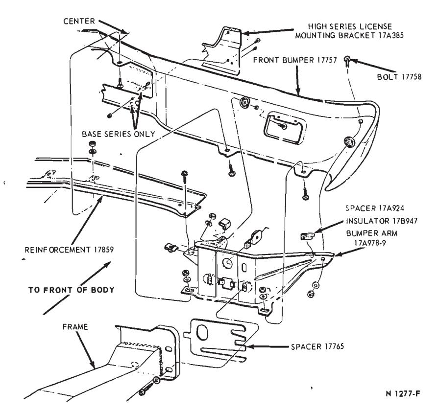
Fig. 1 — Front Bumper Installation — Ford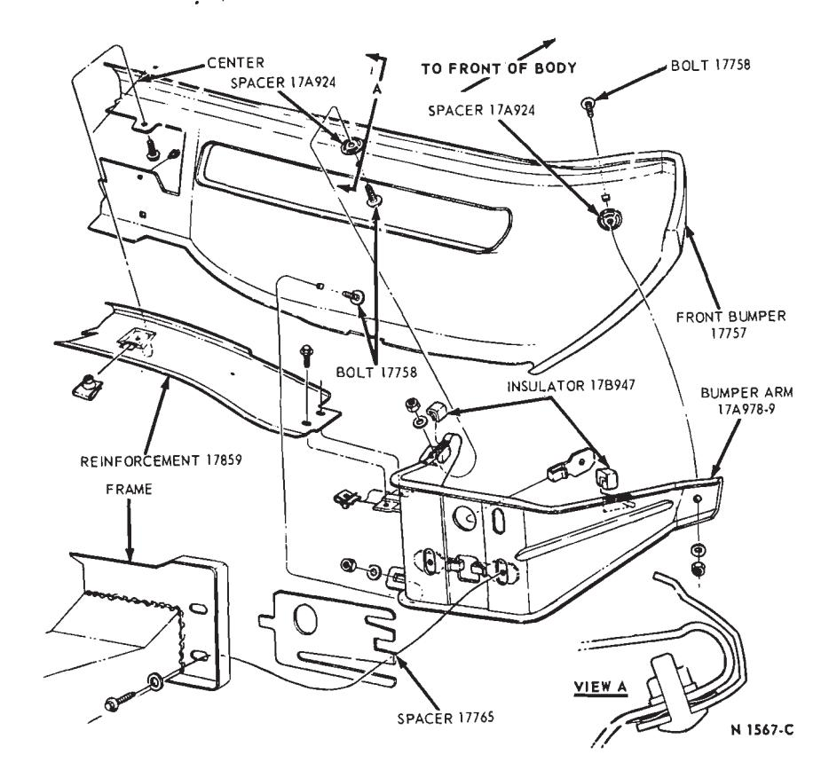
Fig. 2 — Front Bumper Installation — Mercury (Low Series)
Rear Bumper — Ford, Mercury and Meteor Model 71
Removal
- Disconnect the license lights at the connectors and remove the license lights.
- Disconnect the back-up light wires at the connectors.
- Remove the bumper arm-to-frame attaching bolts and remove the bumper assembly (Fig. 6).
- Remove the license plates from the bumper.
- Remove the two bumper-to-reinforcement attaching bolts and nuts (Fig. 6).
- Remove four bumper arm attaching bolts from each end of the bumper, and separate the bumper from the arms and reinforcement.
- Remove the end braces and steps from the bumper.
- Remove the back-up lights.
Installation
- Install the back-up lights, end braces and steps on the bumper. Insert spacers between the bumper and the end braces (Fig. 6).
- Position the bumper arms and reinforcement to the bumper. Place shims and spacers in the locations shown in Fig. 6 and install the bumper-to-bumper arm attaching bolts.
- Install the two bumper-to-reinforcement attaching bolts and nuts.
- Position the bumper assembly to the vehicle and install the attaching bolts.
- Adjust the bumper for a good appearance and tighten the attaching bolts.
- Install and connect the license lights.
- Connect the back-up light wires and install the license plates.
Front Bumper — Falcon
Removal
-
Remove two screws attaching each parking light to the bumper and allow the parking lights to hang by the wires.
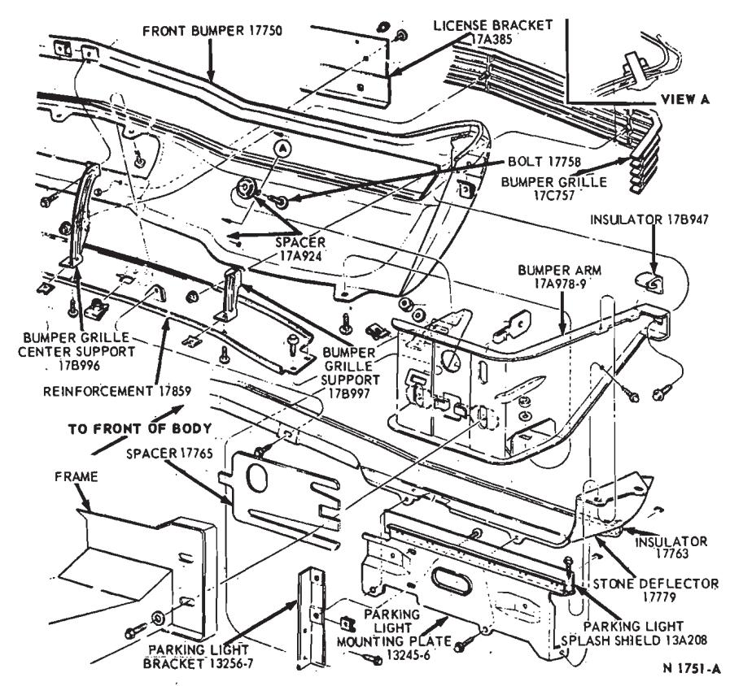
Fig. 3 — Front Bumper Installation — Mercury (High Series)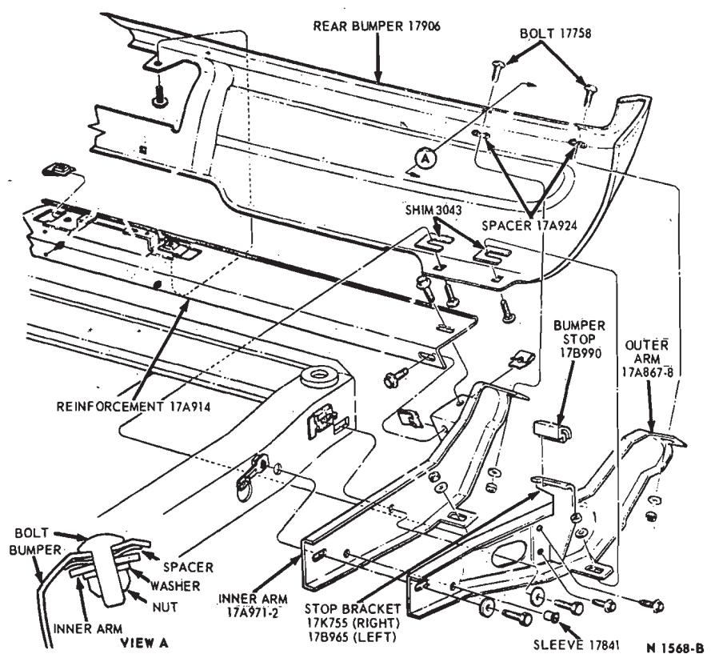
Fig. 4 — Rear Bumper Installation — Mercury and Meteor Except Model 71 -
Remove eight bumper attaching bolts and nuts and remove the bumper from the vehicle (Fig. 7).
-
Remove the license plate, license plate bracket and two anti-rattlers from the bumper (Fig. 7).
Installation
- Install the anti-rattlers, license plate bracket and license plate on the bumper.
- Position the bumper to the bumper and the bumper arms as shown in Fig. 7. Then, install the eight bolts, washers and nuts.
- Align the bumper for a good appearance fit and tighten the retaining nuts.
- Position the parking lights to the bumper and install the attaching screws.
Rear Bumper — Falcon Except Model 71
Removal
- Remove the screws retaining the license plate lamp assembly to the rear bumper.
- Remove the rear license plate.
- Remove the four bumper arm-to-frame retaining bolts (Fig. 8), and remove the bumper assembly.
Installation
- Transfer the rear bumper arms, bumper lower extension and rubber bumper to the new bumper.
- Position the bumper assembly on the car and install the bumper arm-to-frame retaining bolts.
- Position the license plate lamp assembly to the bumper and install the retaining bolts.
- Install the license plate.
Front Bumper — Fairlane
-
Remove the bolts retaining the valence panel to the frame rail. Disconnect the parking lights and remove the valence panel.
-
Remove the bolts retaining the bumper arms to the frame side rail (Fig. 9). Then, remove the bolt retaining the outer arm to the bumper brace. Remove the bumper and arms from the vehicle.
-
Remove both bumper arms from each side of the bumper.
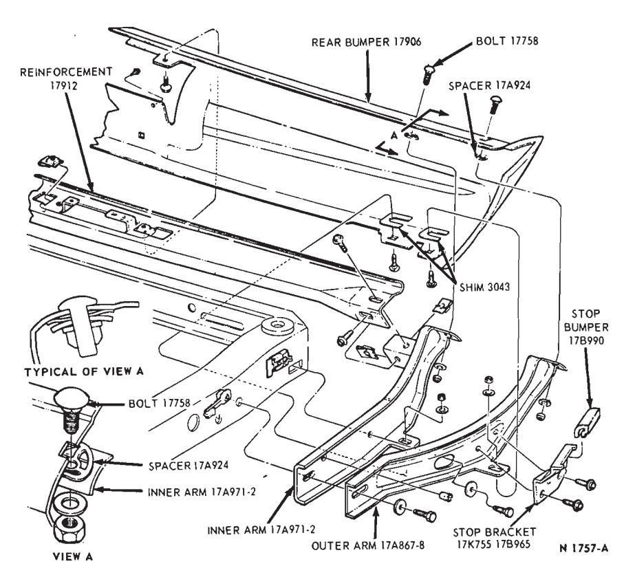
Fig. 5 — Rear Bumper Installation — Ford Except Model 71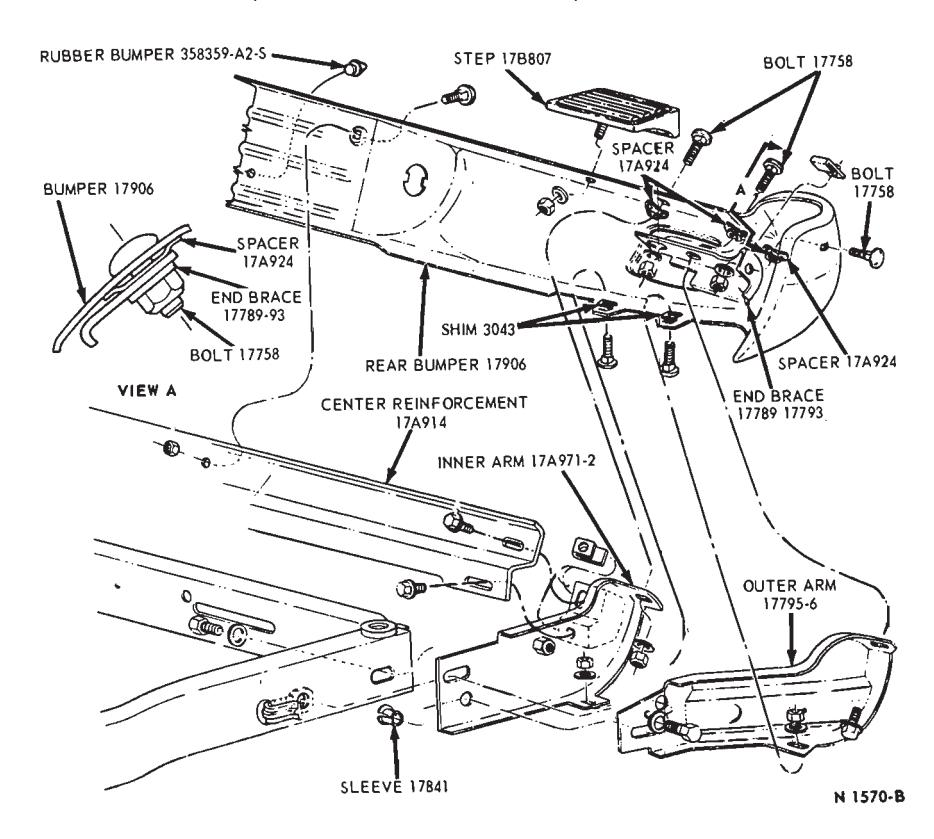
Fig. 6 — Rear Bumper Installation — Ford, Mercury and Meteor Model 71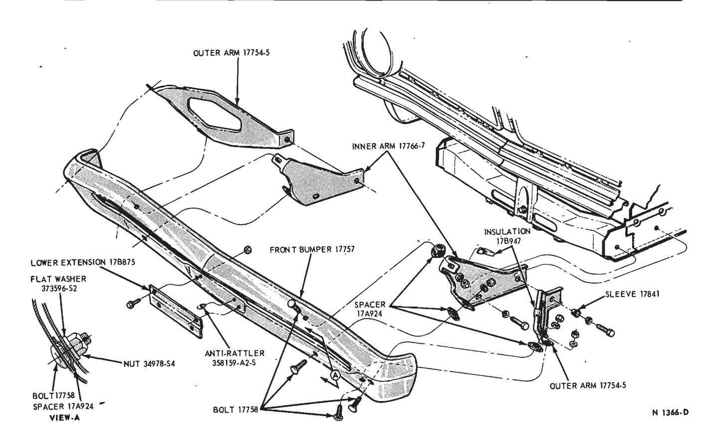
Fig. 7 — Front Bumper Installation — Falcon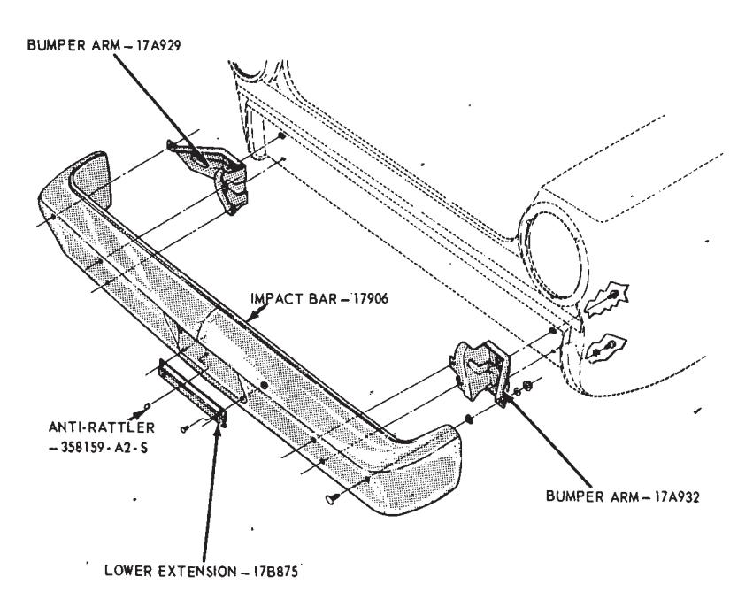
Fig. 8 — Falcon Rear Bumper Installation
Installation
- Position the inner and outer arms on the bumper and install the retaining bolt.
- Position the bumper and arms on the vehicle and install the bumper arm-to-frame retaining bolts (1 each side). Install the bolt retaining the outer arm to the bumper brace.
- Install the valence panel and connect the parking lights.
Front Bumper — Montego
Removal
- Remove the two screws retaining the parking lights to the bumper. Allow the parking lights to hang.
- Remove the two bolts on each side that retain the bumper arms to the frame. Remove the bumper and arms from the vehicle.
- Remove the bumper arms and front bumper reinforcement from the bumper.
- Remove the lower extension and license bracket (Fig. 10).
Installation
-
Install the license bracket and lower extension on the bumper.
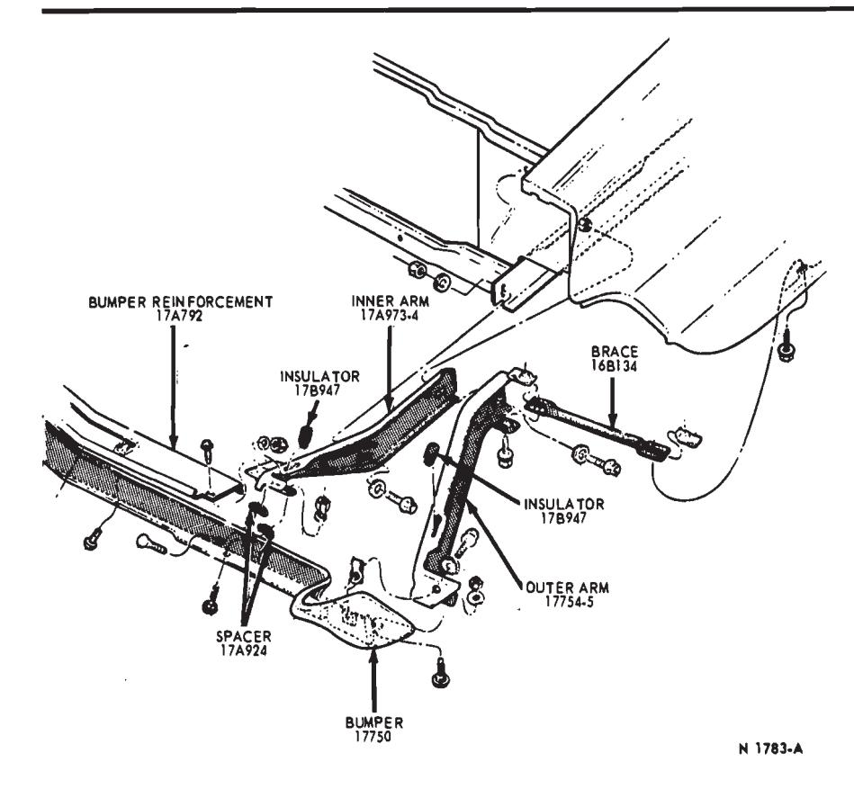
Fig. 9 — Fairlane Front Bumper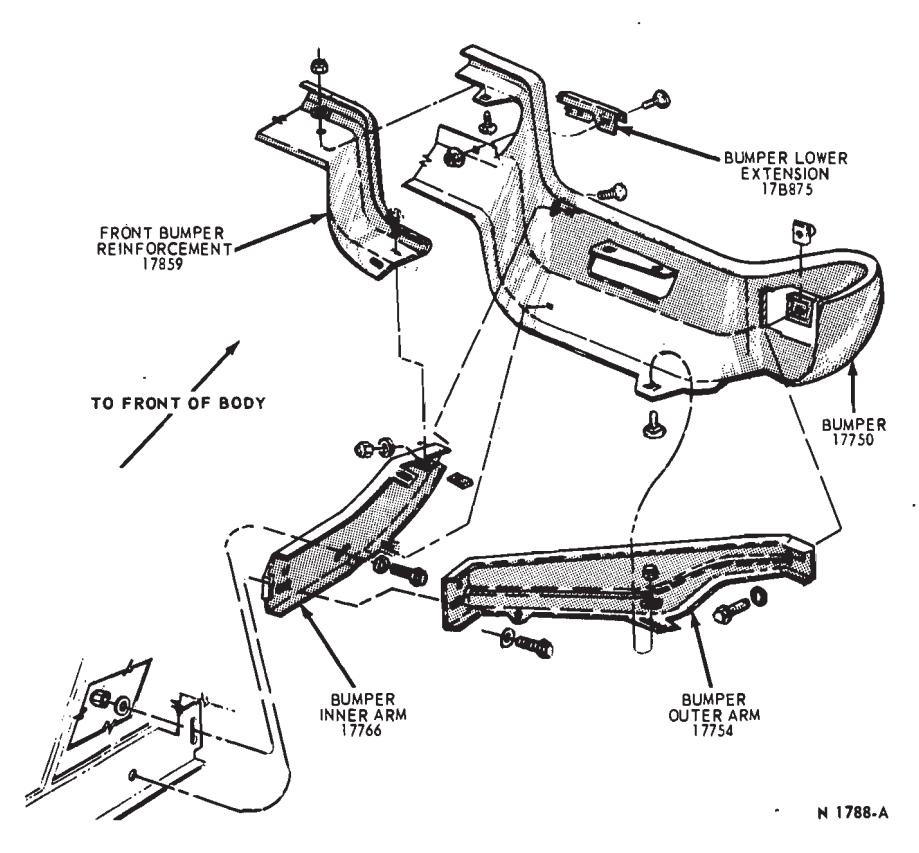
Fig. 10 — Montego Front Bumper -
Install the inner and outer arms and bumper reinforcement on the bumper.
-
Position the bumper and arms to the frame side rail and install the two retaining bolts on each side.
Rear Bumper — Fairlane and Montego — Except Model 66 and 71
Removal
- Open the luggage compartment and remove the bumper mounting bolts located in the compartment.
- Remove the two screws retaining the license plate light and allow the light to hang.
- Remove the two bolts on each side which retain the bumper arms to the body (Figs. 11 and 12). Remove the bumper to a bench.
- Remove the inner and outer arms from the bumper.
Installation
- Install the inner and outer arms on the bumper.
- Position the bumper between the lower extension and the taillights and loosely install the bolts in the luggage compartment.
- Install the four lower bolts retaining the bumper to the body, then tighten the two bolts in the luggage compartment.
- Position the license plate light and install the two retaining screws.
Rear Bumper — Falcon, Fairlane and Montego Models 66 and 71
-
Disconnect the license plate lights at the connectors and remove the lights from the bumper.
-
Remove the license plate from the bumper.
-
Remove four nuts and bolts attaching the bumper arms to the frame rails and remove the bumper (Fig. 13).
-
Remove the outer arms from the bumper.
-
Falcon Only: Remove four bolts and nuts and remove the inner arms from the bumper.
-
Fairlane and Montego Only: Remove two reinforcement attaching bolts and nuts and four inner arm attaching bolts and nuts to remove the reinforcement and inner arms from the bumper.
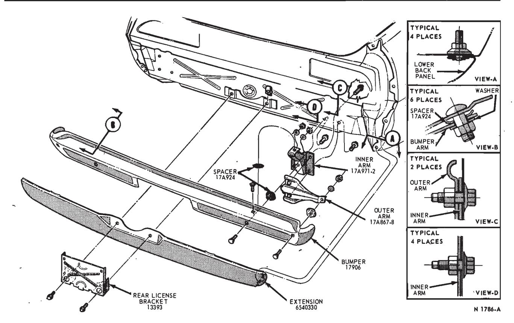
Fig. 11 — Fairlane Rear Bumper Except Models 66 and 71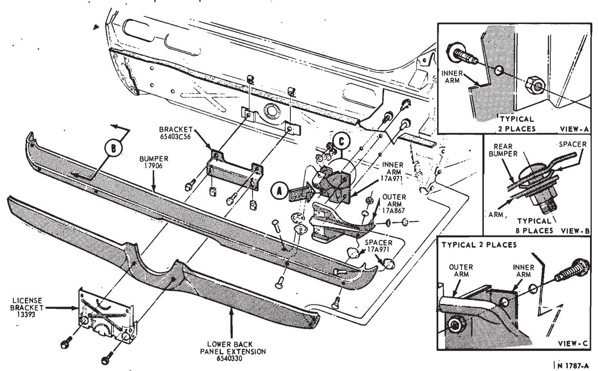
Fig. 12 — Montego Rear Bumper Except Model 71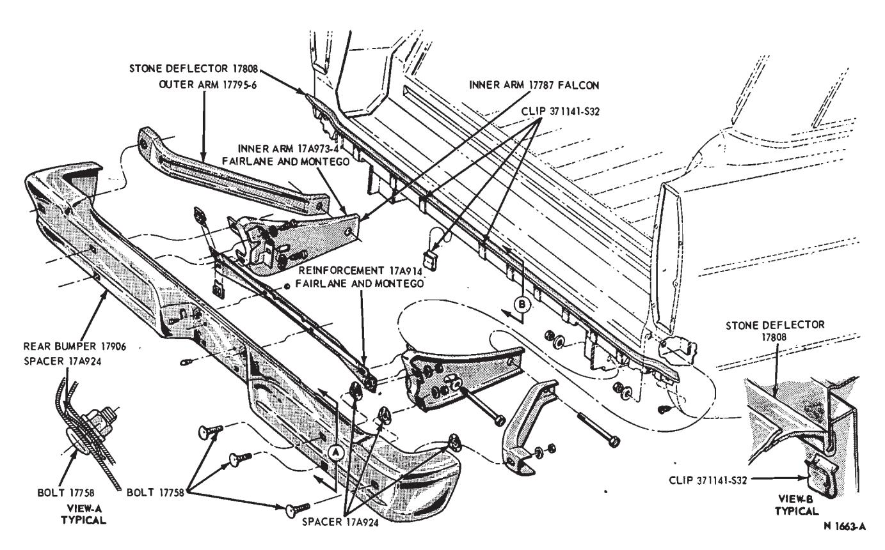
Fig. 13 — Rear Bumper Installation — Models 66 and 71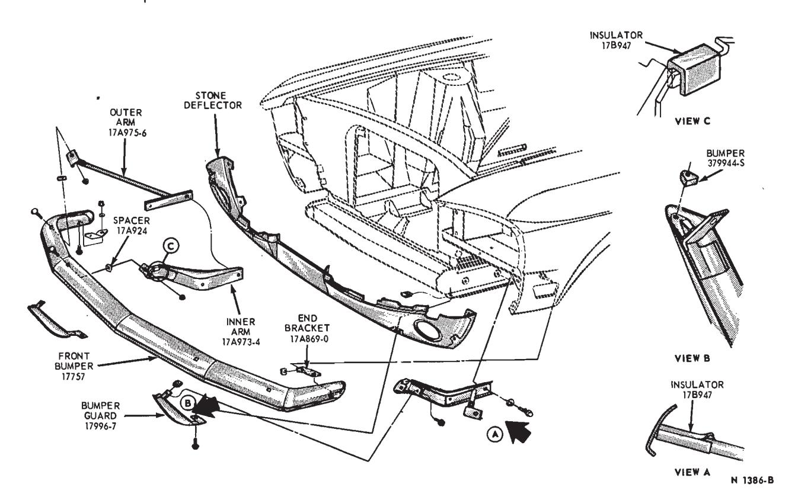
Fig. 14 — Mustang Front Bumper Installation -
Transfer the license plate retainers and rubber bumper to the new bumper.
Installation
- Fairlane and Montego Only: Position the reinforcement and inner arms to the bumper with spacers inserted between the arms and bumper. Then, install the attaching bolts and nuts.
- Falcon Only: Position the inner arms to the bumper. Insert spacers between the inner arms and install the four attaching bolts and nuts.
- Position the outer arms to the bumper with a spacer between them and install the attaching bolt and nut.
- Position the bumper to the vehicle and loosely install the four attaching bolts and nuts. Align the bumper and tighten the bolts and nuts.
- Install the license plate.
- Install the license plate lights and connect the wires at the connector.
Front Bumper — Mustang
Removal
- Raise the car to provide working access.
- Remove the parking lights from the bumper.
- Tape the stone deflector to prevent scratching the paint finish.
- Remove the left and right end bracket bolts from the fenders.
- Remove the bumper bar-to-inner arm and the bumper bar-to-outer arm retaining bolts from each side of the bumper (Fig. 14). Remove the bumper and end brackets as an assembly.
Installation
- Transfer the end brackets to the new bumper.
- Position the bumper on the car. Install the bumper bar-to-inner arm and the bumper bar-to-outer arm retaining bolts.
- Install the end bracket retaining bolts.
- Install the parking lights.
- Remove the protective tape from the stone deflector and lower the car.
Front Bumper Guard — Mustang
- Remove the screw and washer retaining the bumper guard to the frame lower side rail (Fig. 14).
- Remove the screw and washer retaining the bumper guard to the inner arm (Fig. 14) and remove the guard assembly.
- Transfer the nut and retainer assembly and the rubber spacer to the new bumper guard (Fig. 14, View B).
- Position the bumper guard assembly to the bumper.
- Install the two retaining screws.
Rear Bumper — Mustang and Maverick
Removal
- Open the luggage compartment. Remove the spare wheel and disconnect the license wiring connector.
- Remove the four bumper mounting bracket-to-body retaining bolts and remove the bumper assembly (Fig. 15).
- Remove the four bumper-to-mounting bracket retaining bolts and remove the brackets (Fig. 15).
- Remove the two license plate light and bracket retaining screws and remove the light and bracket.
Installation
- Position the license plate light and bracket on the bumper and install the two retaining screws.
- Position the bumper mounting brackets on the bumper and install the bumper-to-mounting bracket retaining bolts.
- Position the bumper assembly to the vehicle. Start one bumper bracket to body attaching bolt on each side. Then, adjust the bumper for proper alignment and install the remaining bumper bracket attaching bolts.
- Connect the license light wiring and install the spare wheel.
Rear Bumper Guard — Mustang
Removal
- Open the luggage compartment door and remove the spare tire assembly to provide access to the bumper guard upper retaining screw and washer.
- From inside the luggage compartment, remove the guard upper retaining screw (Fig. 15).
- From beneath the car, remove the guard lower retaining screw (Fig. 15). Remove the bumper guard.
Installation
- Transfer the two nuts and retainers to the new bumper guard.
- Position the bumper guard on the car and install the two retaining screws.
- Install the spare tire assembly.
Front Bumper — Cougar
Removal
- Remove the bolts retaining the valence panel. Disconnect the parking lights and remove the valence panel.
- Remove the two bolts from each side which retain the bumper arms to the frame side rail (Fig. 16). Remove the bumper and arms from the vehicle.
- Remove the eight bolts (4 each side) which retain the inner and outer bumper arms to the bumper.
Installation
- Position the inner and outer arms on the bumper and install the retaining bolts.
- Position the bumper and arms to the vehicle and install the bolts retaining the arms to the frame side rail.
- Install the valence panel and connect the parking lights.
Rear Bumper — Cougar
Removal
- Open the luggage compartment door and remove the rear lining boards from the back panel.
- Disconnect the license light wire and pull the wire through the grommet.
- Remove four bolts attaching the bumper and mounting brackets to the back panel and remove the bumper (Fig. 17).
- Remove two bolts and nuts attaching each mounting bracket to the bumper and remove the brackets from the bumper.
- Remove the anti-squeak pads from each end of the bumper.
Installation
-
Install the anti-squeak pads on the bumper.
-
Position the mounting brackets to the bumper and install the attaching bolts and nuts (Fig. 17).
-
Position the bumper and mounting brackets to the back panel. Insert the license light wire through the grommet. Then, install the bumper and mounting bracket attaching bolts and lock washers. Adjust the bumper and tighten the attaching bolts.
-
Connect the license light wire at the connector.
-
Position the rear lining boards to the back panel and install the attaching screws.
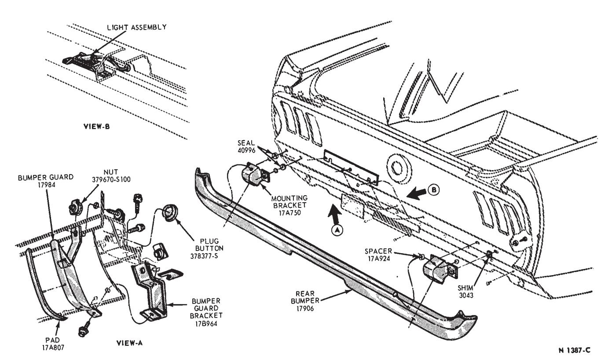
Fig. 16 — Cougar Front Bumper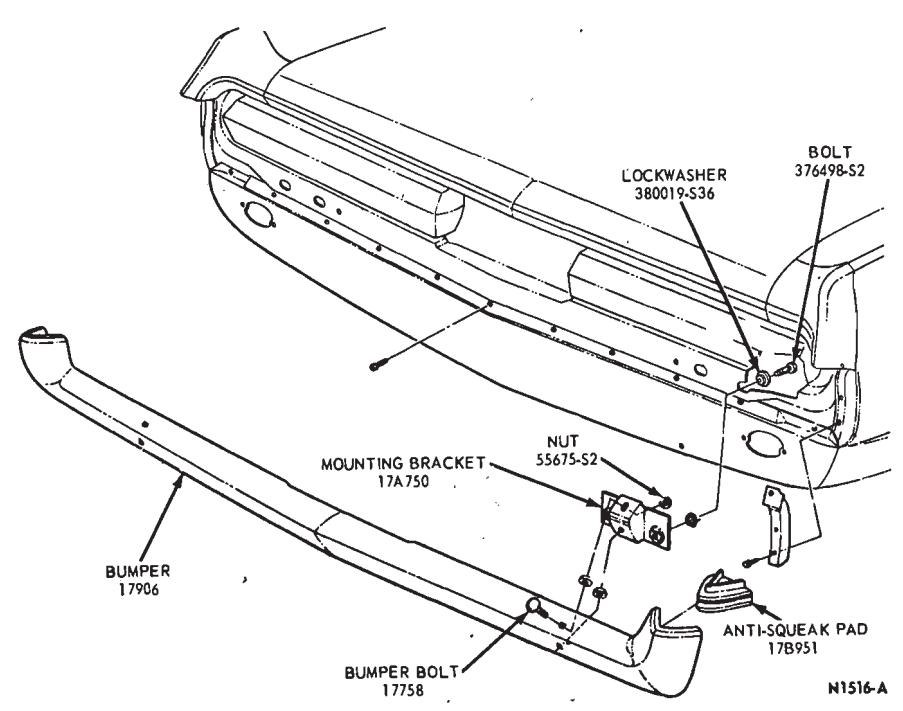
Fig. 17 — Cougar Rear Bumper Installation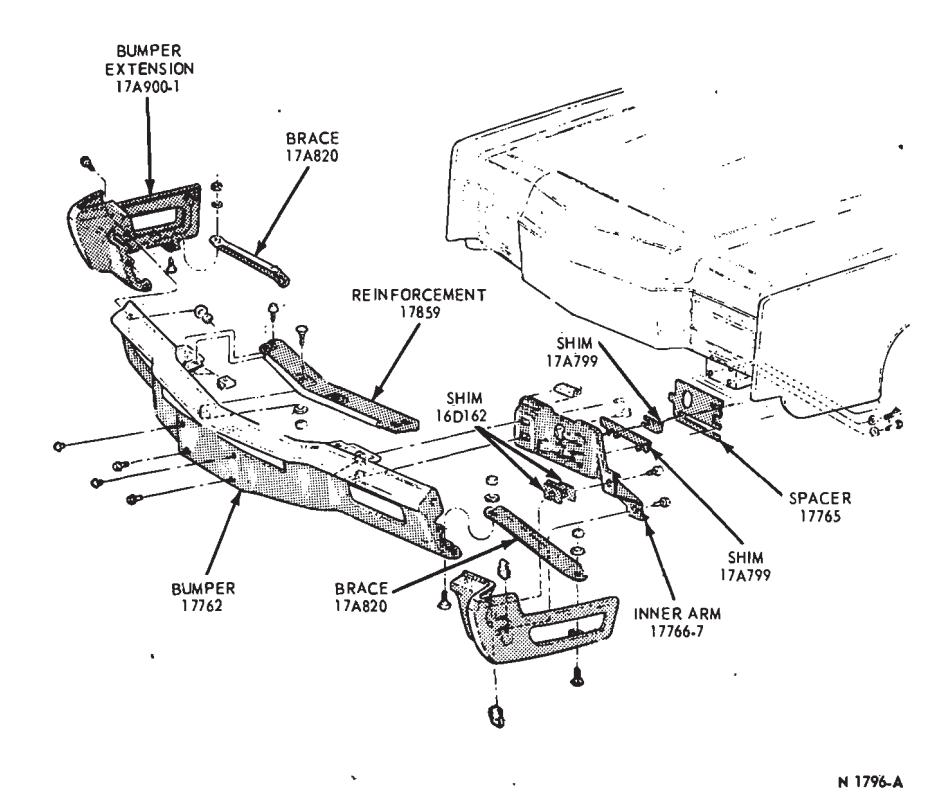
Fig. 18 — Lincoln Continental Front Bumper
Front Bumper — Lincoln Continental
Removal
- Remove the two parking light retaining screws and allow the lights to hang. Also, remove the side marker lights.
- Remove the three bolts retaining each bumper arm to the frame rail end. Remove the spacers, shims and bumper assembly from the vehicle.
- Remove the bolts retaining the bumper extensions to the bumper arms. Remove the bolts retaining the bumper extensions to the bumper braces and bumper (Fig. 18), and remove the extensions.
- Remove the bolts retaining the bumper arms to the bumper and remove the arms.
- Remove the bolts retaining the bumper reinforcement to the bumper and remove the reinforcement.
Installation
- Install the bumper reinforcement on the bumper.
- Install the bumper arms on the bumper.
- Position the bumper extensions to the bumper and install the retaining bolts. Then, install the bumper-to-bumper extension brace. Install the two shims and bolts attaching the bumper arms to the bumper extension.
- Push the bolts through the frame rail end and install the spacer (open end of notches facing outward) and shims on the bolts. Position the bumper arms against the frame rail and tighten the bolts.
Rear Bumper — Lincoln Continental
-
Remove the trim from the rear panel.
-
Disconnect the multiple connectors for the taillight and license light. Push the grommets through the rear panel.
-
Remove the muffler bracket from the bumper arms.
-
Position a floor jack to the bumper.
-
Remove the bolts retaining the bumper arms to the frame side rails (Fig. 19). With an assistant, remove the bumper from the vehicle.
-
Disconnect the side marker lights from the taillight wiring harness and remove both taillight assemblies.
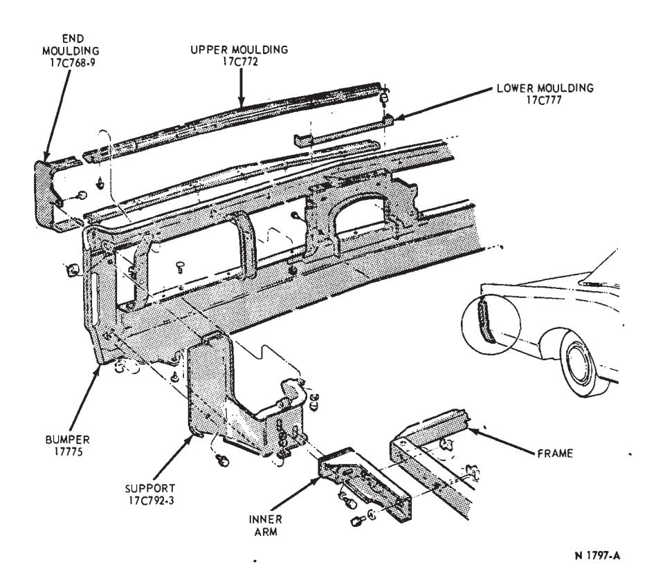
Fig. 19 — Lincoln Continental Rear Bumper -
Remove the bumper arms from the bumper.
-
Remove the side marker light assemblies and the license light from the bumper.
-
Remove the upper, lower and end mouldings from the bumper.
-
Remove the license plate bracket.
Installation
- Install the upper, lower and end mouldings on the bumper.
- Install the side marker lights and license light.
- Install the license plate bracket.
- Install the bumper arms on the bumper.
- Install both taillight assemblies and connect the side marker lights to the wiring harness.
- Place the bumper assembly on a floor jack and jack the bumper into position on the vehicle.
- Install the bolts retaining the bumper arm to the frame rails.
- Route the taillight wiring through the rear panel and install the grommets. Connect the multiple connectors.
- Install the muffler bracket on the bumper arms.
- Install the trim on the rear panel.
Front Bumper — Continental Mark III
Removal
- Remove six bolts attaching the bumper arms to the vehicle frame, and remove the bumper and arms from the vehicle.
- Remove the center reinforcement from the inner arms and bumper (Fig. 20).
- Remove the left and right outer bumpers and outer arms from the bumper (Fig. 20).
- Remove the inner arms from the bumper.
- Remove the upper center bumper from the lower center bumper (Fig. 20).
- Remove the license plate and lower extension from the lower center bumper.
- Remove the nut and retainers from the bumper components and install them on any new components.
Installation
- Install the lower extension and license plate on the lower center bumper.
- Install the upper center bumper on the lower center bumper.
- Install the inner arms, outer bumpers, and outer arms on the bumper.
- Install the center reinforcement on the bumper.
- Position the bumper assembly to the vehicle frame and install the six attaching bolts.
- Adjust the bumper for a good appearance, and tighten the bumper arm attaching bolts.
Rear Bumper — Continental Mark III
Removal
- Disconnect the back-up light and license light wires at the connectors.
- Remove the bumper arm to frame attaching bolts (Fig. 21) and remove the bumper and arms from the vehicle.
- Remove the back-up light and license light from the bumper.
- Remove the center reinforcement, bumper arms, and outer bumpers from the center bumper (Fig. 21).
Installation
- If the bumper is to be replaced, transfer the nut and retainers to the new bumper.
- Install the inner arms and center reinforcement on the bumper (Fig. 21).
- Install the outer arms and outer bumpers on the bumper (Fig. 21).
- Install the back-up lights and license light on the bumper.
- Position the bumper to the vehicle and install the attaching bolts snug.
- Connect the back-up and license light wires at the connectors.
- Position the bumper for a good appearance fit and tighten the attaching bolts.
Front Bumper — Thunderbird
- If the vehicle is equipped with bumper mounted parking lights, remove the two retaining screws and allow the lights to hang.
- Remove the bolts which attach the bumper arms to the frame side rails and remove the bumper and valence panel as an assembly.
- Remove the bolts which attach the bumper to the bumper support (Fig. 22).
- Remove the bolts which attach the bumper to the valence panel and reinforcement and remove the bumper.
Installation
- Position the bumper to the bumper support and install the attaching bolts.
- Install the bumper-to-valence panel and bumper reinforcement attaching bolts.
- Position the bumper and valence panel assembly to the frame side rails and install the attaching bolts.
Rear Bumper — Thunderbird
Removal
- Raise the rear of the vehicle.
- Remove one bolt attaching each outer arm (Fig. 23) to the bumper.
- Remove two bolts attaching each inner arm to the bumper.
- Remove two bolts attaching the bumper to the center reinforcement and remove the bumper from the vehicle.
- Remove six nuts and retainers from the bumper.
Installation
- Install six nuts and retainers on the bumper and position the bumper to the vehicle.
- Install the two center reinforcement to bumper attaching bolts.
- Install three arm to bumper attaching bolts at each end of the bumper. Then, tighten the eight bumper attaching bolts and lower the vehicle.
Front Bumper — Maverick
The front bumper is shown in Fig. 24. Remove the bumper and arms from the body structure. Then, remove the bumper from the attaching parts.
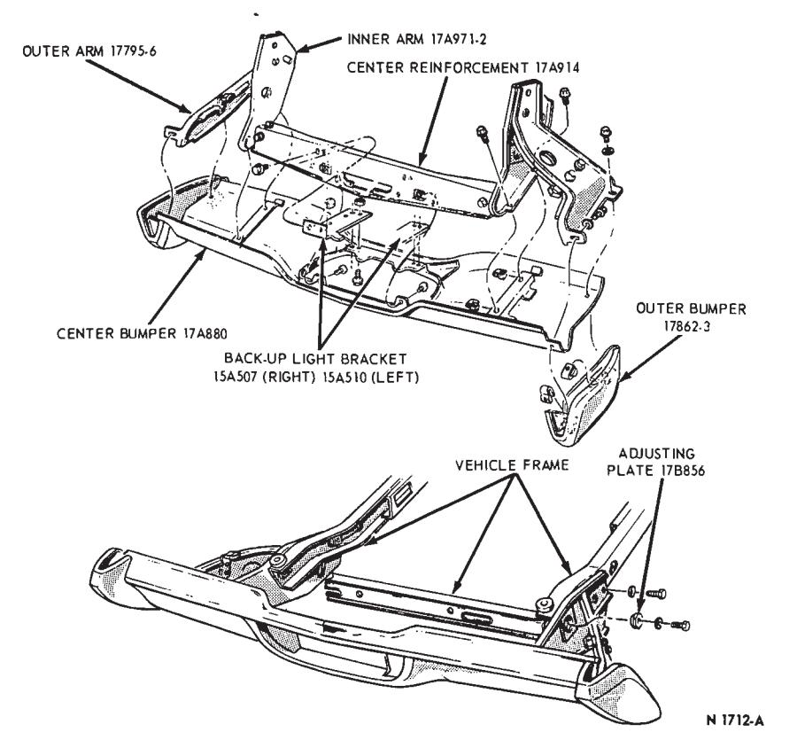
Fig. 21 — Rear Bumper Installation
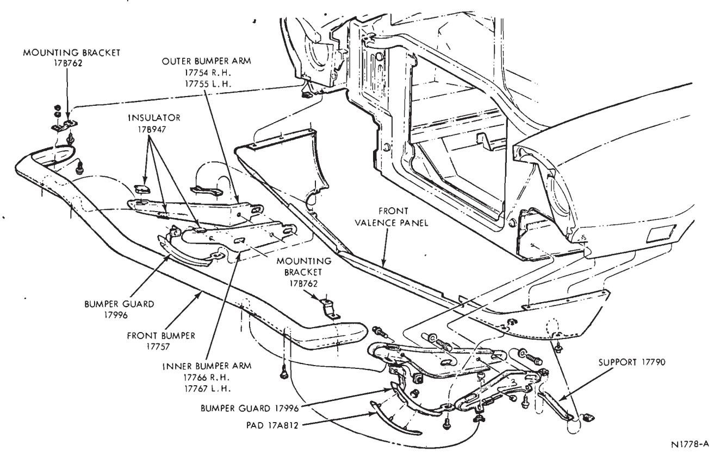
Fig. 24 — Front Bumper — Maverick
See next page for Figs. 22 & 23
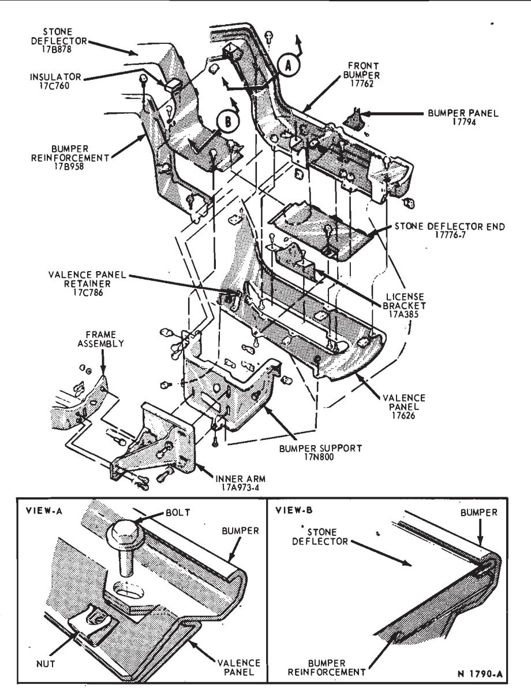
Fig. 22 — Thunderbird Front Bumper
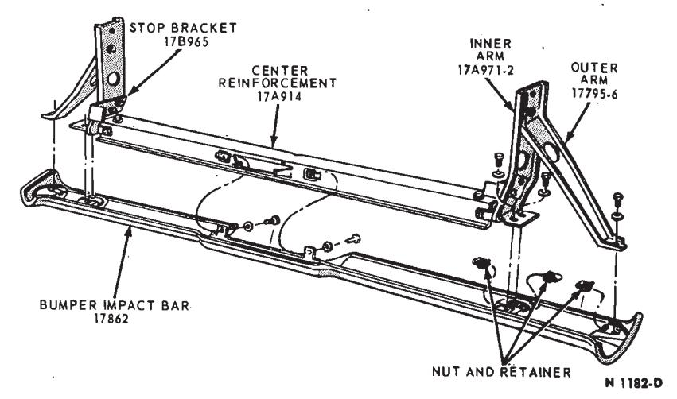
Fig. 23 — Rear Bumper — Thunderbird